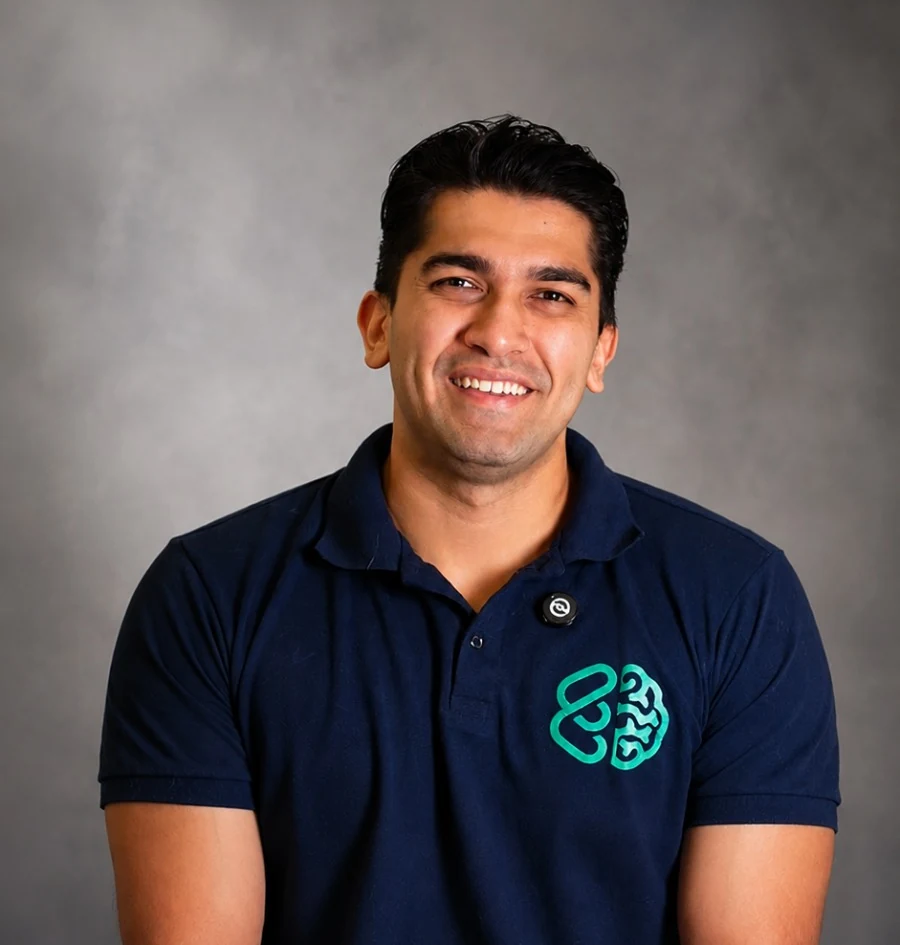
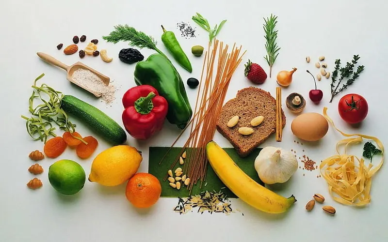
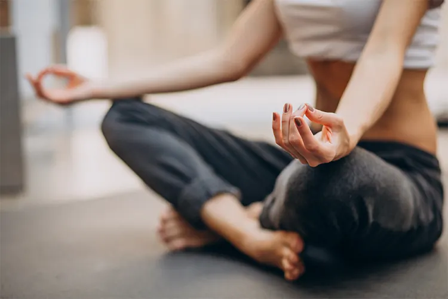
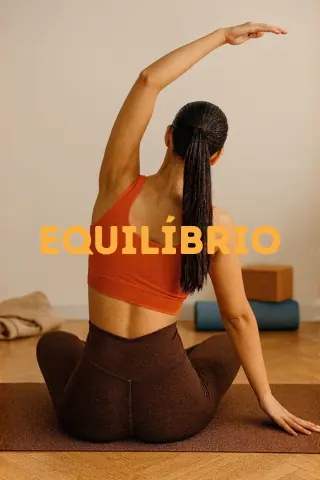
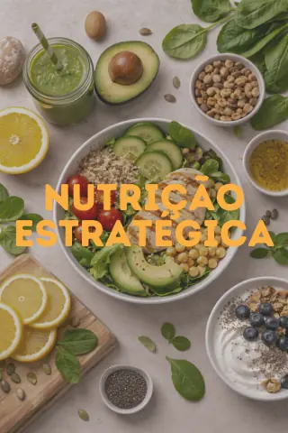

Ansiedade antes dos simulados
O nervosismo assume o controle, o coração acelera e o medo trava o seu conhecimento na hora da prova.
Lote promocional aberto · até 43% de desconto nos planos · inscrições por tempo limitado
Mentoria realizada por psicólogos para futuros médicos
Conquiste a constância, o equilíbrio emocional e a direção que o cursinho não te ensina. Conheça o Método BASE — a única preparação multidisciplinar para quem não aceita nada menos que a vaga ainda este ano.

“A aprovação em Medicina não é apenas sobre o quanto você estuda, mas sobre como o seu cérebro processa o estresse, o foco e a retenção de conteúdo.”
O problema
Você já comprou cursos, baixou planners e tentou estudar 12h por dia, mas a conta não fecha. A ansiedade aparece na hora do simulado, a constância some na segunda semana e o cansaço mental te impede de evoluir.
O nervosismo assume o controle, o coração acelera e o medo trava o seu conhecimento na hora da prova.
A mente não desliga e a cobrança interna faz você sentir que pausar é estar perdendo tempo.
Você passa horas exaustivas na cadeira, mas sente que não reteve o conteúdo e não evolui nos pontos.
O Método BASE
A ciência do alto rendimento aplicada à rotina de estudos: otimização cognitiva, física e emocional para quem não aceita menos que a aprovação. Para alcançar esse objetivo, criamos o método BASE.
Estratégias neuropsicológicas para controle de ansiedade e foco.
Treinos planejados para oxigenar o cérebro e aumentar a resistência.

Nutrição específica para manter a energia cognitiva o dia todo.

Técnicas para manter a calma sob pressão.
Psicologia clínica, nutrição cognitiva e preparo físico trabalhando juntos pela sua vaga.
Quero aplicar o métodoO que você recebe
Uma metodologia integrada em 5 pilares estratégicos, com mais de 20 aulas práticas desenhadas para transformar sua rotina, saúde e rendimento cognitivo.


Uma mentoria de psicólogos para futuros médicos
Somos um casal de psicólogos apaixonados pelo estudo do comportamento humano e pela construção de alta performance com equilíbrio. Unimos ciência, saúde mental e desenvolvimento pessoal através da nossa formação em Psicologia Clínica, Terapia Cognitivo-Comportamental (TCC), Avaliação Psicológica e especialização em Neuropsicologia, ajudando pessoas a desenvolverem foco, constância e inteligência emocional de forma sustentável.
Nossa bagagem inclui a especialização em preparação de atletas de Alta Performance pelo FC Barcelona Universal, o que nos deu a exata metodologia de como conduzir mentes sob extrema pressão ao topo do pódio.
Criamos o Preparamente porque entendemos que a aprovação em Medicina não é apenas sobre o quanto você estuda, mas sobre como o seu cérebro processa o estresse, o foco e a retenção de conteúdo. Nosso compromisso é garantir a sua aprovação, blindando a sua saúde mental para que você vença sem adoecer no processo.
Assista
Depoimentos
Avaliações reais sobre o trabalho do Mateus Tiujo: Google e mentoria Preparamente.
“A mentoria Preparamente está sendo essencial para o meu desempenho e saúde mental. O acompanhamento está me ajudando a encontrar o equilíbrio que eu preciso nos estudos. Os profissionais são extremamente atenciosos, disponíveis e oferecem todo o suporte necessário. Com certeza, a Preparamente me deixa cada dia mais confiante e perto da minha aprovação!”
“O Mateus é um excelente profissional, muito didático nos atendimentos e técnicas de manejo, gosto muito da sua abordagem baseada em evidências, tem me ajudado de maneira objetiva e prática.”
“O Mateus é um excelente profissional! Ele me auxiliou/auxilia a entender meus comportamentos, refletir e a evoluir, por meio de conversas, desafios e feedbacks. Recomendo seu trabalho sem medo algum.”
“Excelente trabalho, me ajuda a tempos com suas técnicas, mente blindada graças a você, muito obrigado Mateus.”
“Ótimos profissionais, ótimas pessoas, parabéns pelo trabalho!!”
Investimento
Três experiências de acompanhamento, do suporte pontual à preparação completa de alta exigência. Todos os planos com garantia incondicional de 7 dias.
Uma experiência mais independente, com conteúdos completos para transformar sua forma de estudar. Ideal para quem precisa de suporte pontual nos momentos de mais pressão (simulados, reta final), sem sinais de crise instalada.
De R$527,00
por R$299,00
ou 3x de R$99,66
Para quem deseja apoio mais próximo, estratégico e personalizado ao longo da preparação para medicina. Uma experiência ideal para quem mostra ansiedade ou autocobrança mais constantes. As sessões constroem o repertório até o dia da prova.
3 meses de acompanhamento intenso
De R$820,00
por R$499,00
ou 3x de R$166,33
Uma experiência pra quem tem desgaste multifatorial (sono, alimentação, corpo) ou já viveu uma tentativa frustrada. Trata o aluno como atleta se prepara pra competição de alta exigência. Psicoterapia, nutrição e preparo físico juntos, pra eliminar o máximo de variável antes da prova.
3 meses de acompanhamento intenso
De R$1.300,00
por R$799,00
ou 3x de R$266,33
Pagamento via PIX ou cartão. Fale com a nossa equipe no WhatsApp para garantir a sua vaga no lote promocional.
Risco zero
Experimente o método por uma semana. Se entender que a nossa preparação não é para você, devolvemos 100% do seu investimento. Sem burocracia.
Quero começar com segurançaPerguntas frequentes
Você não recebe apenas um planejamento genérico. Através da nossa plataforma e dos encontros, nossos profissionais (psicólogos, preparador físico e nutricionista) analisam o seu ponto de partida atual. A partir disso, cruzamos os dados para alinhar a sua regulação emocional com protocolos específicos de alimentação para o cérebro e treinos físicos que combatem a fadiga mental, tudo integrado à sua grade horária de estudos.
Sim. O Preparamente não substitui o seu cursinho ou cronograma de matérias; nós somos a estrutura de sustentação. Seja estudando por conta própria ou assistindo a aulas em grandes cursinhos presenciais ou online, nós calibramos a sua mente, o seu físico e a sua gestão de estresse para que você consiga render o máximo dentro do modelo de estudos que você já utiliza.
Com certeza. O famoso “branco” na hora da prova não é falta de conhecimento, é um travamento neurobiológico causado pelo excesso de cortisol (o hormônio do estresse). Através das especializações da nossa equipe em TCC (Terapia Cognitivo-Comportamental) e Neuropsicologia, aplicamos técnicas de neuromodulação e regulação emocional validadas pela ciência para você blindar a mente, controlar o nervosismo e acessar o conteúdo que você estudou com total clareza sob pressão.
Não, porque eles são desenhados para a realidade de um vestibulando de Medicina. A nutrição cognitiva foca em ajustes práticos que aumentam a sua energia cerebral sem te fazer perder tempo na cozinha. Da mesma forma, a preparação física e a yoga trazem estímulos rápidos e estratégicos, focados em oxigenar o cérebro e aliviar as dores musculares causadas por horas na cadeira, adaptando-se perfeitamente aos seus horários livres.
Pelo contrário, ele vai otimizar o seu tempo. Estudar 12 horas por dia com a mente exausta e ansiosa gera um rendimento baixíssimo. O Preparamente organiza a sua rotina, o seu corpo e a sua mente para que você consiga reter em 5 horas o que antes levava o dia todo tentando aprender. Nós cuidamos da sua capacidade de foco e energia para que as suas horas de estudo de fato se transformem em pontos na prova.
O próximo passo é seu
Conheça o Método BASE: a única preparação multidisciplinar para quem não aceita nada menos que a vaga ainda este ano.
Garantia incondicional de 7 dias · Acompanhamento de psicólogos